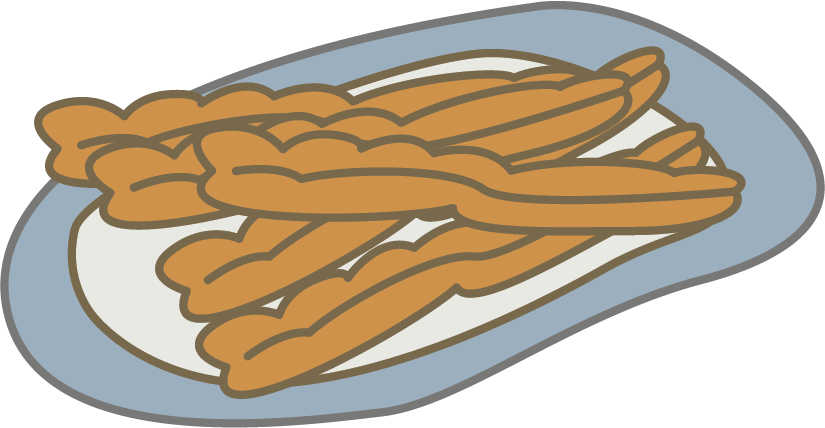

油條 YOU TIAO
These are similar to bread sticks, except the dough is much flakier and is usually fried until golden brown. These are not usually eaten alone, but used as filling for other dishes such as shao bing and Taiwanese rice balls. They are usually super crunchy and flaky on the outside and soft on the inside.